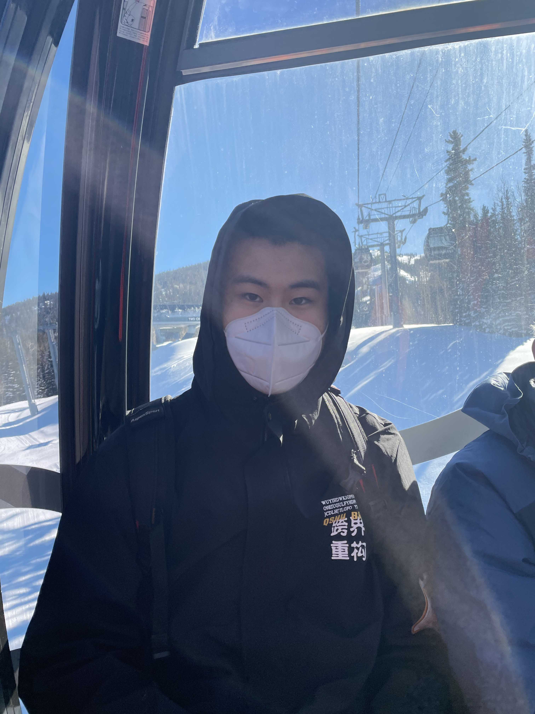
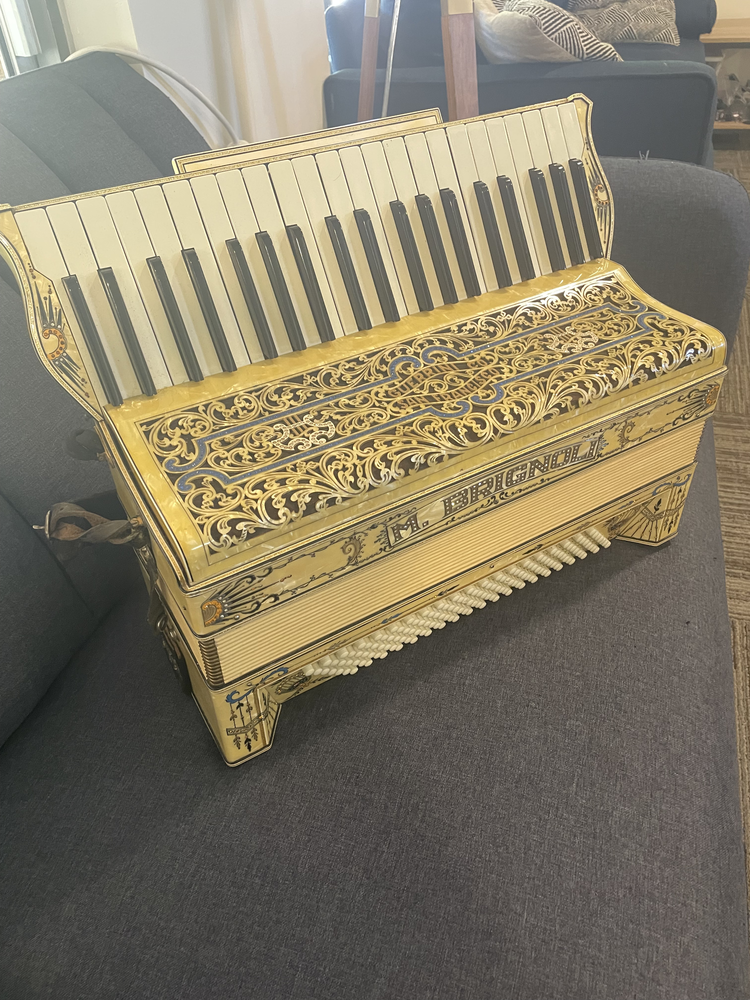

Outdoor Activities
Tennis
I joined the tennis team in high school and I'm now still keeping playing it in the weekends.
Skiing

My favorite sport in Winter. I like the feeling of speed and snow.
Indoor Activities
Accordion

I started learning accordion at 4 years old and was even close to do professional track (but I finally didn't do so, or the world may lose an expert in AI, haha(just kidding)). I'm still in love with music and is my magic to heal my frustrations when I'm anxious.
Video Game
I usually play competitive games or tower defense games (but I'm still crunching numbers and learning the mechanics in details. The “Occupational Habits” of a research guy).